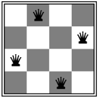
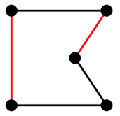
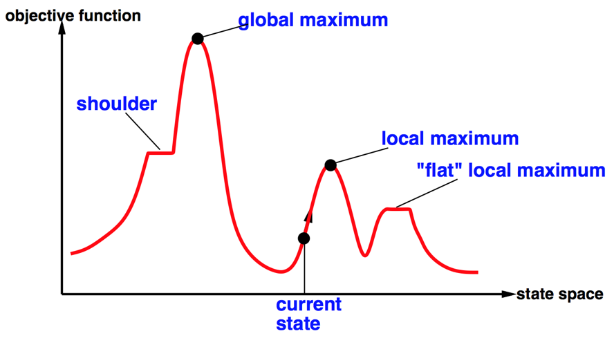
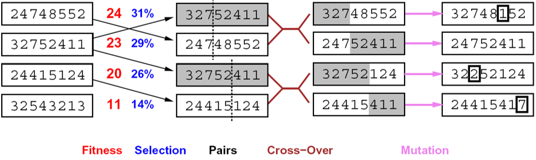

局部搜索算法（local search）是一种启发式搜索算法，专注于在解空间中通过不断地移动当前解的邻近解来寻找更优解。
在许多优化问题中，路径是无关紧要的；问题的目标状态是解决方法。状态空间等价于“完整”配置的集合。
处理这类优化问题一般有两类方法：


爬山算法（hill-climbing）是一种简单且直观的局部搜索算法，用于解决优化问题。该算法的基本思想类似于爬山过程，即尝试朝着当前位置最陡峭的方向移动，以期望到达更高的点（更优解）。
爬山算法可以作为N皇后问题的启发式算法。
试试使用python编写代码：

随机重启
随机横向移动
模拟退火算法是一种启发式优化算法，灵感来源于固体退火过程中的原理。其基本思想是模拟固体物质加热后再缓慢冷却的过程，通过在解空间中随机搜索，并接受比当前解更差的解，以一定概率来避免陷入局部最优解，最终找到全局最优解。
基本思想：
试试使用python编写代码：
理论依据：
简单证明 (对于逆过程: x→y iff y→x):
模拟退火及其变种在超大规模集成电路布局(VLSI)和其他配置优化问题中是重要工具
局部束搜索算法(local beam search)是一种并行搜索算法，它通过同时维护多个状态（光束）来探索解空间，以期望找到更优的解。
基本思想：
局部束搜索和并行K个局部搜索是不同的。 局部束搜索是一种并行搜索算法，通过同时维护多个状态（光束）来探索解空间。每个光束代表一个搜索路径，光束之间可以共享信息，以期望找到更优解。 而并行K个算法是指同时运行K个独立的算法实例，每个实例独立搜索解空间。这些算法实例之间通常是相互独立的，没有信息共享。
著名的遗传(genetic)算法/进化(evolution)算法就是随机束搜索的变形。

遗传算法隐喻了自然选择的过程
解决连续变量/动作空间
许多配置和优化问题可以被构建为局部搜索问题
通用算法:
众多机器学习算法是局部搜索算法